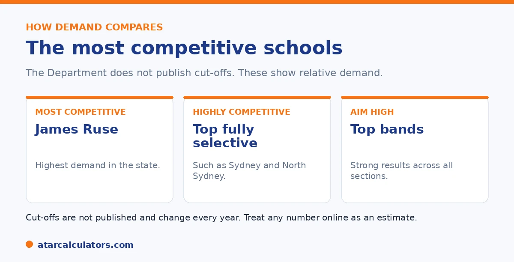

Here is the short version. The NSW Department of Education does not publish cut-off scores for any selective school. So there is no official number for James Ruse or any other top school. What is known is the relative demand. James Ruse is the most competitive school in the state. Other fully selective schools like Sydney Boys, Sydney Girls, North Sydney Boys, North Sydney Girls and Baulkham Hills are also highly competitive. Aim for strong results across all four sections rather than a fixed score.
Parents often search for the exact score James Ruse needs. It is a reasonable thing to want. The problem is that no such number is published, and the figures floating around online are guesses.
What can be said is how the top schools compare in demand, and how to aim high sensibly. To estimate where a practice result sits, use our NSW selective calculator.
Key takeaways
- The Department does not publish cut-off scores for any school.
- James Ruse is the most competitive selective school in NSW.
- Other fully selective schools are also highly competitive.
- Cut-offs change every year with the cohort and paper.
- Numbers online are estimates, not official figures.
- Aim for strong results across all four sections.
Let us be honest about cut-offs
The Department does not release cut-off scores, raw marks, or a score total for any selective school. So there is no official number for James Ruse, Sydney Boys, or anywhere else.

Any exact figure you see is a third-party estimate, usually drawn from past years. Cut-offs also move each year, because entry is a ranking against the students who sat the test that year. Treat any number as a rough guide at best.
James Ruse: the most competitive
James Ruse Agricultural High School is consistently the most competitive selective school in the state. It draws the strongest field of applicants, and it has topped the HSC results for many years, which keeps demand extremely high.
In practice, a child needs to be near the very top of the statewide ranking to have a realistic chance. That means strong, even results across all four sections, not a single standout.
Other highly competitive schools
Several other fully selective schools are also very competitive. These include Sydney Boys, Sydney Girls, North Sydney Boys, North Sydney Girls, Baulkham Hills, and Hornsby Girls, among others. Demand at each shifts a little year to year.
While James Ruse usually sits at the top, the gap between the most competitive schools can be small. A child aiming for any of them needs a strong overall result.
Want a rough idea of how a practice result compares?
Try the NSW selective calculator →Fully selective and partially selective schools
It helps to know the difference. Fully selective schools take every student through the placement test, and the best known ones are the most competitive. Partially selective schools run one or two selective classes alongside a regular enrolment.
Partially selective schools are often, though not always, a little less competitive to enter than the top fully selective schools. They can be a strong option, and a sensible one to include in your preferences.
How to gauge competitiveness without a number
Since there is no published cut-off, use what you do get. The performance bands on a result, and a child's percentile on good practice tests, tell you roughly how they compare with others. Aiming for the top band across all sections is the safest route to a competitive school.
The point is to focus on performance, not on hitting a mythical figure. For how the scoring and ranking work, see our guide to how entry works.
Since chasing a published cut-off is impossible, the productive question is how to judge competitiveness from what you actually have, and there are useful signals. The clearest is your child's own performance on good-quality practice tests. Reputable practice papers that report a percentile or band give a reasonable sense of where a child sits relative to other applicants. Consistently strong, balanced results across all sections are the best indicator of competitiveness. Focus on that balance rather than a single strong area. This is because the placement score combines the sections and a weakness in one drags the total down. So a child who is strong and even across reading, mathematical reasoning, thinking skills and writing is better placed than one who spikes in maths but lags in writing. It also helps to understand what "competitive" means here. For the most sought-after schools, you are effectively aiming for the top band across the board. This is because those schools fill from the very top of the ranking each year. But treat this as a direction of effort, not a precise target. This is because the exact score needed shifts annually with the applicant pool and the equity placement model, and no fixed number exists. The healthiest approach is to prepare for a strong, even profile. Use practice results to gauge roughly where your child stands. Preference the schools you would genuinely attend in true order. And accept that the final outcome depends on the year's pool. Aiming for consistent high performance, rather than a rumoured cut-off, is both more accurate and less stressful.
Choosing your preferences wisely
You can list up to three schools. Listing three of the most competitive schools and nothing else is risky. If your child ranks just below the line at all three, they can miss out entirely.
A balanced list pairs an ambitious choice with a realistic one, often a partially selective school. That way a strong but not top result still leads to an offer. For a preparation plan, see our 12-month guide.
Demand is what drives competitiveness
A school's competitiveness comes from demand, not an official ranking. The more strong applicants who list a school high in their preferences, the higher the effective entry bar becomes. There is no published league table behind it.
So when people call a school the most competitive, they mean it attracts the most high-scoring applicants. That can shift over time as reputations and demand change.
Location shapes how competitive a school is
Where a school is matters. Selective schools in central and high-demand parts of Sydney tend to draw more applicants, which pushes the effective entry bar up. Some regional selective schools are less heavily contested.
So two selective schools can differ a lot in how hard they are to enter, based mainly on where they sit and who applies. Location is worth weighing alongside reputation.
Single-sex and co-ed choices
The selective schools include boys' schools, girls' schools and co- educational ones. This shapes your options, since your child can only apply to schools that enrol their cohort.
So part of choosing preferences is practical: which schools your child is eligible for, where they are, and which environment suits them. Fit matters as much as the reputation of any single school.
Looking beyond the best-known few
It is easy to fixate on the two or three most famous selective schools. But many selective schools offer an outstanding education without that top-tier level of competition.
So widen your view. Listing a strong, slightly less contested school high can give your child an excellent selective place. Chasing only the best-known names can mean missing a great option.
Reputations shift over time
School reputations are not fixed. A school seen as the most competitive today may be less so in a few years, as demand, results and word of mouth change. There is no official ranking underpinning it.
So be wary of relying on an older reputation, or a list you saw years ago. What matters is current demand, which shifts, and how well a school fits your child now.
Fit matters more than the name
The best selective school is not automatically the most contested one. It is the one where your child will be happy, supported and stretched. A slightly less famous school can be a far better fit.
So weigh environment, location and your child's needs alongside reputation. Chasing only the best-known name, and missing out entirely, serves your child less well than a great match they can actually attend.
Compare schools carefully, not by name
Rather than ranking schools by reputation alone, look at what each actually offers. Where possible, visit, read about their programs, and consider the environment and the commute.
The right school for your child may not be the highest-demand one. A school where they will be supported, challenged and happy is worth more than a famous name they struggle to reach or settle into. So compare on substance, not just status.
Common questions
What score do you need for James Ruse?
No official cut-off is published. So there is no exact score to quote. James Ruse is the most competitive selective school in NSW. So a child needs to be near the very top of the statewide ranking, with strong results across all four sections.
What are the top selective school cut-offs?
The Department does not publish cut-offs for any school. Figures seen online are third-party estimates that change each year. Use performance bands and practice percentiles to judge competitiveness instead.
Which selective school has the highest cut-off?
James Ruse is consistently the most competitive school in the state and draws the strongest field. Other fully selective schools like Sydney Boys and North Sydney Boys are also highly competitive, with small gaps between them.
What score do you need for North Sydney Boys?
There is no published cut-off. North Sydney Boys is one of the more competitive fully selective schools, so a strong, even result across all four sections is needed. Treat any specific number online as an estimate.
Are partially selective schools easier to get into?
Often, though not always, partially selective schools are a little less competitive than the top fully selective schools. They run selective classes alongside a regular enrolment and can be a sensible backup preference.
See how a result compares
Enter practice section results for a rough competitiveness guide. Free, and no signup.
Open the NSW selective calculator →Related guides
This guide is general information for parents, not formal advice. The NSW Department of Education sets the rules, and details like dates, weightings and the equity model can change. It does not publish section weightings, the score total, or school cut-off scores. So always confirm current details on the official NSW selective high schools pages. Reviewed by the ATARCalculators Editorial Team.